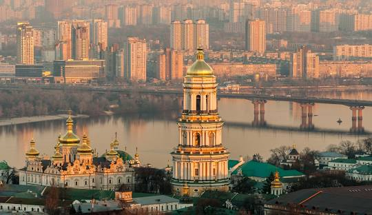
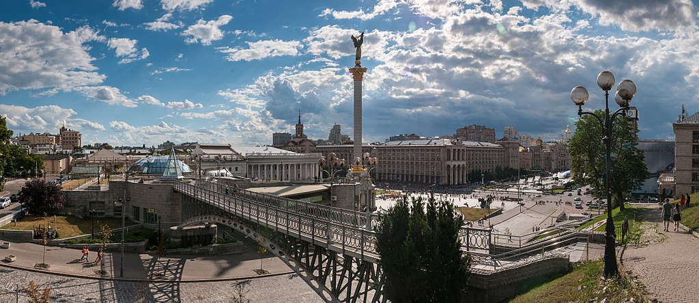

Київ
Київ-столиця та найбільше місто України.
Розташований у середній течії Дніпра,
у північній Наддніпрянщині.
у північній Наддніпрянщині.
Поділяється на такі сфери:
- Політичну
- соціально-економічну
- транспортну
- освітньо-наукову
- історичну
- культурну
- духовну
У системі адміністративно-територіального устрою України Київ має спеціальний статус, визначений Конституцією, і не входить до складу жодної області, хоча і є адміністративним центром Київської області.

За «Повістю временних літ», Київ заснував полянський князь Кий зі своїми братами Щеком і Хоривом та сестрою Либіддю. Згідно з археологічними даними та писемними джерелами, початок безперервного розвитку Києва датується 2-ю половиною V ст. — 1-ю половиною VI ст.; осередком розширення Києва була гора Замкова.
